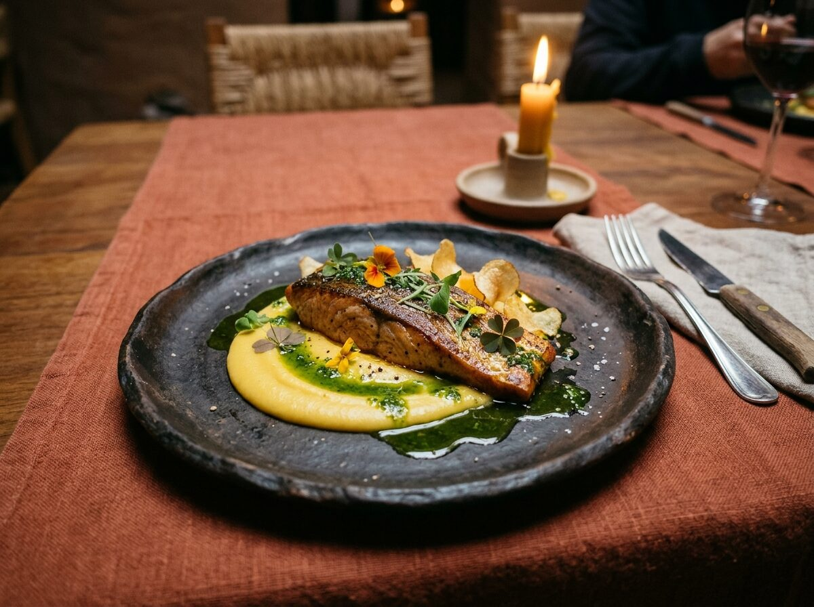
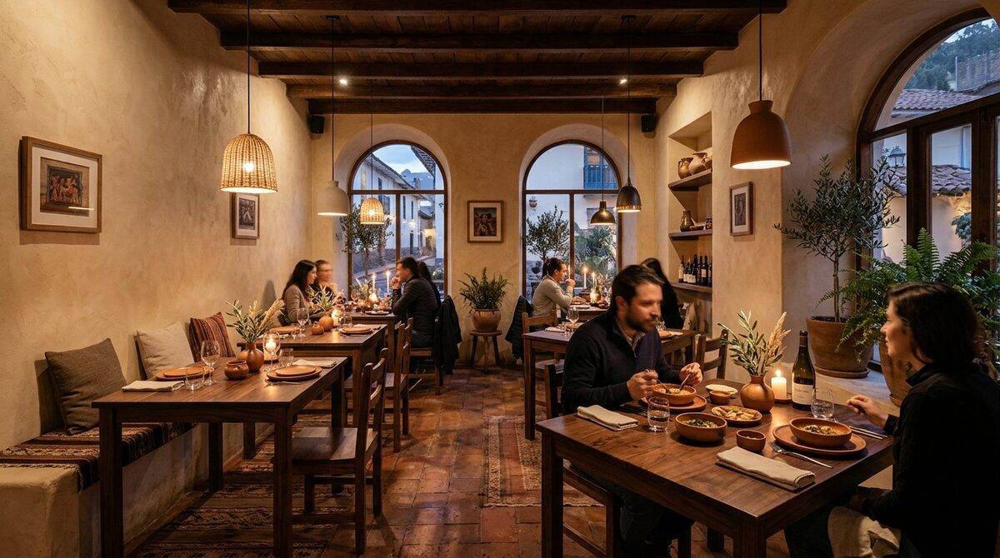
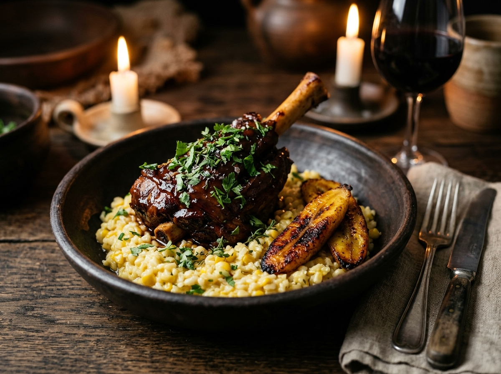
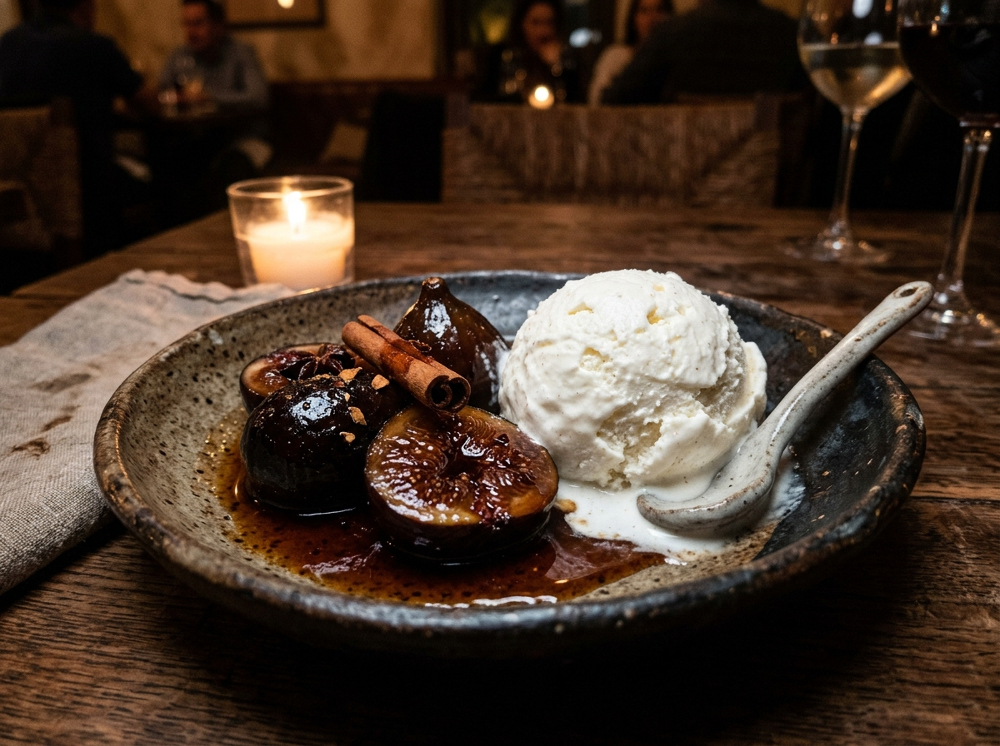
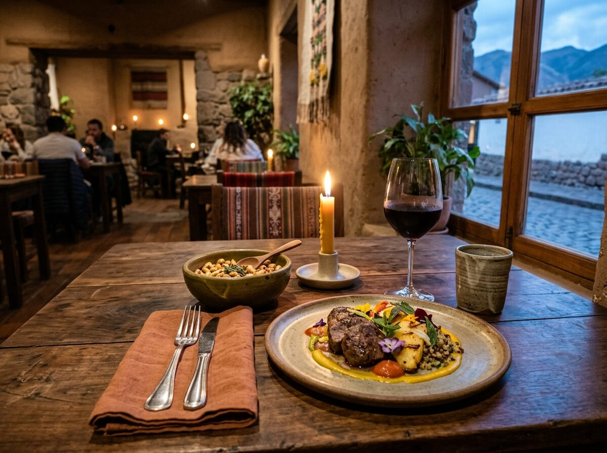
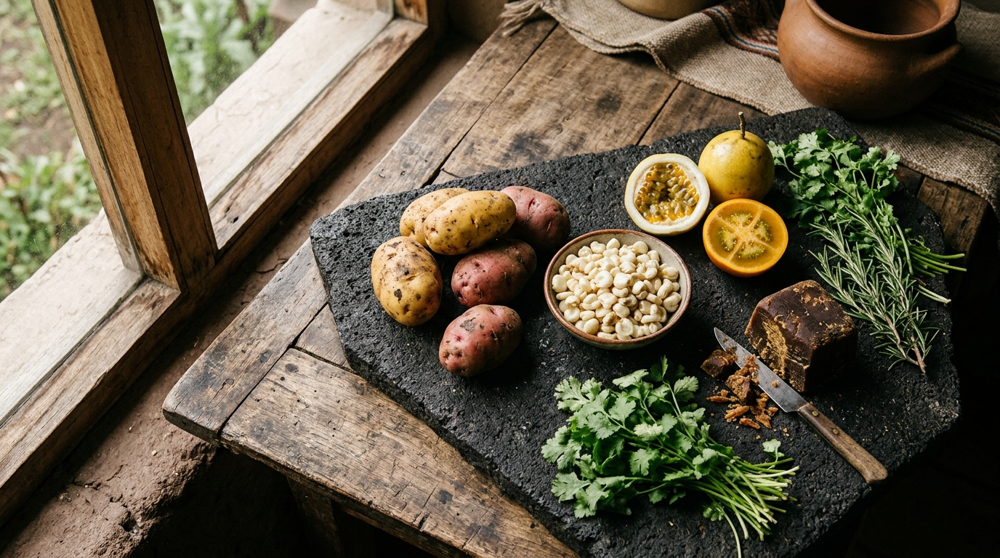

Trucha Sellada en Puré de Melloco
Filete sellado a la plancha, crema suave de papa chaucha, aceite de cilantro y vegetales andinos.

Kallpa es un restaurante ficticio creado para demostrar cómo un espacio gastronómico presenta su propuesta culinaria, su carta referencial en USD y consultas de reserva listas para WhatsApp.
En esta sección narrativa cada restaurante comparte el sentido de su cocina y la relación con los ingredientes de su entorno. Los textos, horarios y fotografías de este ejemplo se reemplazan por los de tu establecimiento real.
Trucha de altura, papas nativas, mote y hierbas frescas del mercado local combinados en preparaciones directas.
Horario de ejemplo de martes a domingo, de 12:30 a 22:30 en zona horaria America/Guayaquil.
Cada plato incluye ingredientes visibles, precio referencial y opción para preparar una consulta previa por WhatsApp sin cobros reales.
Fotografía editorial dedicada por receta. Agrega cualquiera a tu lista o consulta directamente sus detalles.

Filete sellado a la plancha, crema suave de papa chaucha, aceite de cilantro y vegetales andinos.

Cocción lenta de 6 horas con hierbas serranas, arroz con mote y maduro asado.

Higos en almíbar de panela con especias dulces y helado artesanal de queso tierno.

Más allá de cada plato, la propuesta del sitio muestra cómo comunicar la atmósfera de sala: mesas de madera, vajilla en tonos tierra y tiempos pensados para conversar sin prisa desde el mediodía hasta la noche.
Resumen ilustrativo de los elementos presentes en las recetas del menú demostrativo, sin atribuciones a fincas reales ni certificaciones externas.

Láminas frescas en tiradito cítrico, sellado a la plancha, braseado lento de 6 horas o corte a la brasa.
Presentes en purés cremosos, llapingachos con maní tostado, acompañamientos rústicos al romero y arroces tradicionales.
Aportan acidez fresca a la leche de tigre, dulzor especiado a postres e infusión caliente de la casa.
Escenas ilustrativas exclusivas de esta galería. Haz clic para ampliar cada fotografía.
Nota: Kallpa es un restaurante ficticio creado únicamente como demostración funcional de AV·STUDIO. Ningún formulario confirma mesas reales ni procesa cobros.
Valida los campos para generar una consulta de ejemplo hacia WhatsApp incluyendo tu selección de platos si elegiste alguno.